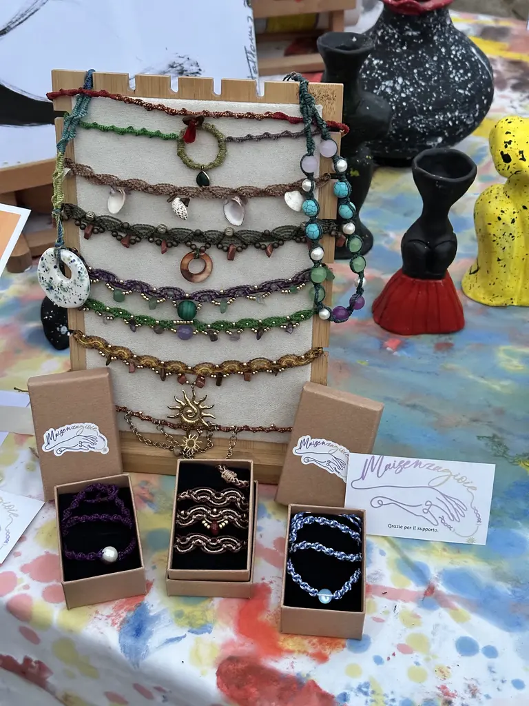
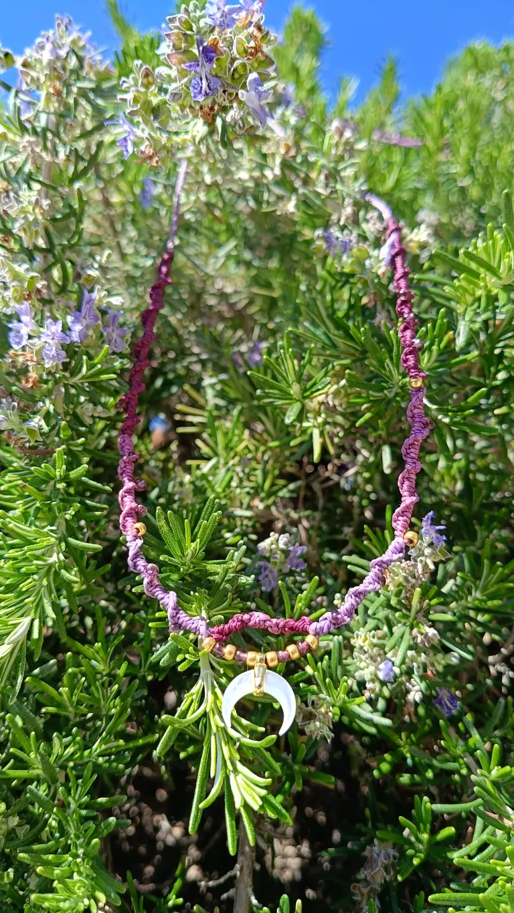
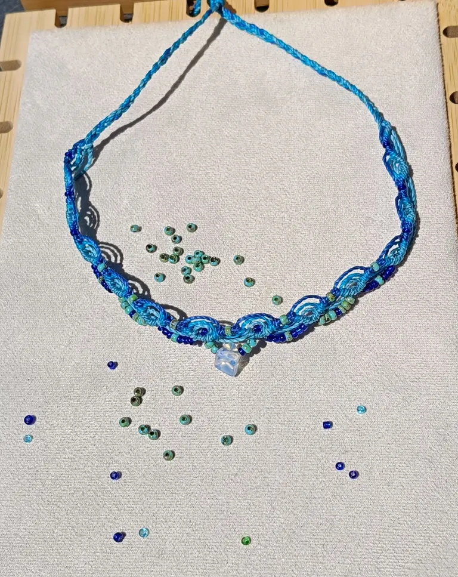
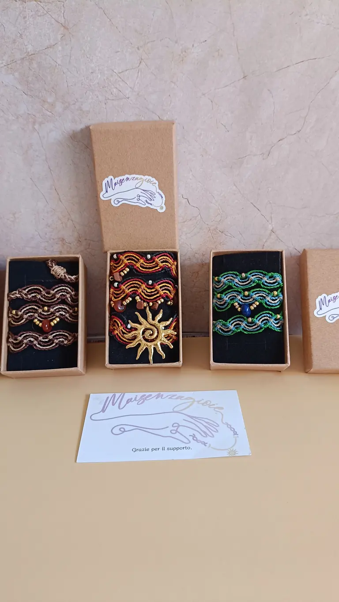

Chi li fa
Ciao, sono Marica.
Ho iniziato a creare perché ero stanca di vedere tutti indossare le stesse cose. Sentivo il bisogno di dare vita a qualcosa di davvero unico.
Com’è cominciata
Un filo, infinite combinazioni.
Faccio gioielli da quando sono piccola, ma la vera magia è arrivata quando ho scoperto il micromacramè. Con questa tecnica pochi fili diventano infinite combinazioni: basta cambiare un solo colore e cambia tutta l’emozione del pezzo.
Intanto, nelle vetrine e nei negozi online, vedevo sempre la stessa cosa: accessori freddi, fatti in serie, stampati in migliaia di copie identiche. Gioielli senza una storia, che durano una stagione e poi finiscono dimenticati in un cassetto.
Io volevo un gioiello con un’anima: che raccontasse chi lo indossa e lo facesse sentire unico, mai parte di una catena di montaggio. Così, nel 2024, ho cominciato a crearli da sola.

Da dove vengono i colori
La natura è il mio laboratorio.
La mia ispirazione più grande è la natura, che spesso diventa il mio laboratorio all’aperto. Amo le sfumature della terra, le gradazioni del mare, i riflessi della luce al tramonto.
È l’incontro fra l’intreccio del macramè e questi colori a guidare ogni mio nodo.

Il valore del tempo
Solo mani, fili e pietre vere.
Nel mio laboratorio non ci sono macchinari né ritmi frenetici. Ci sono le mie mani, i miei fili e gli elementi naturali che scelgo uno per uno: pietre dure come giada, ametista, occhio di tigre, avventurina, lapislazzuli, pietra di luna, onice e agate di mille sfumature. E poi madreperla, perle d’acqua dolce, dettagli in ottone e in acciaio inox dorato o argentato.
Ogni collana che vedi su questo sito nasce da un’immagine, passa per ore di tentativi, nodi e abbinamenti di colore, e prende forma un pezzo alla volta.
Cosa vuol dire per te
Tre promesse.
-
1
Unica, davvero.
Ogni sfumatura, ogni riflesso delle pietre, ogni piccolo contrasto non è un difetto: è il segno del fatto a mano. Nessuno al mondo avrà una gioia identica alla tua.
-
2
Fatta per durare.
Scelgo personalmente ogni componente. I miei gioielli sono pensati per accompagnarti ovunque, resistenti e curati nei dettagli. Se un elemento non è all’altezza, per bellezza o per durata, dal mio tavolo non esce.
-
3
Un acquisto consapevole.
Scegliere Maisenzagioie vuol dire scegliere la lentezza dell’artigianato e la cura dei dettagli, invece della fretta del consumo di massa.

Il viaggio continua
Questa storia ora è anche tua.
Quando spedisco una creazione non la metto semplicemente in una scatola: la chiudo con cura nel suo packaging rigido, aggiungo un tocco personale e so che sta per cominciare una nuova avventura, insieme a te.
Le mie collane nascono per valorizzare chi sei: per farti brillare nelle occasioni speciali o per dare carattere a una semplice t-shirt, ogni giorno. Diventano parte dei tuoi viaggi, delle tue estati, dei tuoi ricordi.
Grazie di essere qui, in questo viaggio fatto di nodi, colori e natura.
Con gioia, Marica Viciglione